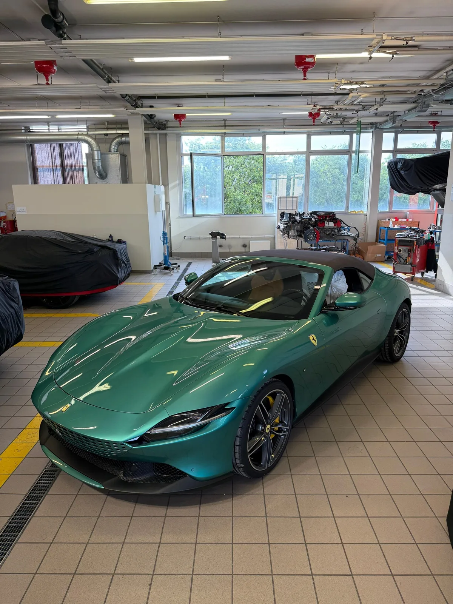

Coating ceramico auto e protezione nanotecnologica della carrozzeria a Padova: lucentezza a specchio, effetto idrofobico avanzato e difesa duratura della vernice. Il nanocoating ceramico è lo scudo di massima qualità per auto di lusso, sportive e quotidiane.
Il trattamento ceramico nanotecnologico (nanocoating) è un rivestimento liquido a base di diossido di silicio (SiO2) o carburo di silicio (SiC) che si lega chimicamente alla superficie del trasparente originale della vernice. A differenza delle classiche cere protettive che si dissolvono dopo pochi lavaggi, la protezione ceramica forma una barriera dura, trasparente e duratura.
Presso l'atelier Lorenzo Garage Detailing a Torreglia (Padova), ogni vettura viene prima decontaminata chimicamente e meccanicamente, quindi sottoposta a un ciclo di lucidatura correttiva e infine sigillata con prodotti ceramici di altissima purezza.
Il sigillante ceramico è una protezione più leggera, adatta come mantenimento o come prima soluzione della durata di alcuni mesi. Il coating ceramico professionale crea invece uno strato più spesso e duro, il vero nanocoating per carrozzeria, che resiste da 2 a 5 anni. Durante la consulenza a Padova valutiamo insieme la soluzione più adatta alla tua auto e al suo utilizzo.
Le vernici delle auto sportive richiedono un'applicazione del nanocoating eseguita con la massima precisione. A Padova eseguiamo il trattamento ceramico su Porsche (911, Cayenne, Taycan), Ferrari e vetture di prestigio, proteggendo la vernice e, su richiesta, anche gli elementi in fibra di carbonio. Se la vernice presenta graffi o aloni, il trattamento è preceduto da una lucidatura e correzione vernice.

Dati trasparenti e concreti per pianificare la lavorazione della tua auto.
L'intervento richiede mediamente 1-2 giorni lavorativi presso il nostro studio a Torreglia (PD). Questo tempo consente di svolgere accuratamente la decontaminazione, la lucidatura correttiva preliminare e la polimerizzazione ad alta stabilità del coating ceramico.
Il costo del trattamento ceramico per la carrozzeria a Padova varia in base a molti fattori: la categoria dell'auto (citycar, berlina, SUV, supercar), lo stato della vernice e il numero di passaggi di correzione necessari. Ogni preventivo è costruito su misura. Contattaci per una consulenza gratuita.
Osserva la trasformazione visiva e il livello di finitura ottenuto.
Da 2 a 5 anni, a seconda del prodotto e della manutenzione. Il rivestimento ceramico crea un legame chimico permanente con il trasparente, difendendo l'auto dai raggi UV e micro-graffi.
Il preventivo è sempre personalizzato. Dipende dalle dimensioni dell'auto, dallo stato della vernice, dai passaggi di correzione necessari e dalla durata del coating scelto. La consulenza e la valutazione della vernice sono gratuite.
Ogni 2-3 settimane con prodotti a pH neutro. Grazie all'effetto idrofobico, lo sporco non aderisce e la pulizia risulta rapida e senza rischio di rigare la vernice.
Servizio professionale per Padova, Abano Terme, Torreglia e provincia. Prenota subito una consulenza gratuita.
Scrivici su WhatsApp